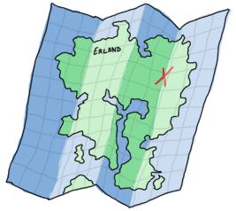

高阶函数
让我们函数化

把你自定义的函数作为参数传递给另一个函数的能力， 是所有的函数式编程语言的一个重要组成部分。 也就是说，作为参数的函数和其它的参数是一样的。 一个函数可以通过高阶函数这个方式将另一个函数作为参数。 高阶函数对熟悉Erlang的人来说是非常好的用的抽象工具和最好用的工具。
再一次，这也是一个植根于数学的概念，主要是 lambda演算。 我不会介绍lambda演算非常多的细节，因为很多然需要花费很多时间理解它并且它有点超出本章的范围。 尽管如此，我会简单的定义它：一个系统中所有的东西都是函数，即便是数字。 因为所有东西都是函数，函数必须接受另一个函数作为参数并且可以用更多函数操作这个参数！
好了，这听起来有点奇怪，所以让我们用一个例子来展示它们：
-module(hhfuns). -compile(export_all). one() -> 1. two() -> 2. add(X,Y) -> X() + Y().
现在打开Erlang的shell，编译这个模块并进行一些尝试：
1> c(hhfuns).
{ok, hhfuns}
2> hhfuns:add(one,two).
** exception error: bad function one
in function hhfuns:add/2
3> hhfuns:add(1,2).
** exception error: bad function 1
in function hhfuns:add/2
4> hhfuns:add(fun hhfuns:one/0, fun hhfuns:two/0).
3
感到迷惑？并非如此，一旦你知道在第二个命令中这是怎么工作的（难道不是显而易见的吗？），你就不会迷惑。
在第二个命令中原子one和two被传入到add/2中，
然后在第三个命令中将两个原子当作函数的名字(X() + Y())。
如果不使用参数列表来写函数，那么这些原子将被认为是原子，但是原子不能认为是函数，所以调用会失败。
这就是为什么第三个表达式也会失败：因为值1和2也不能被当作函数调用，并且我们只需要函数做参数！
这是一个新的语法，为了让你把模块外的函数传入进去。它是这样写的fun Module:Function/Arity：
这个语法告诉VM，使用那个特殊的函数并将它绑定到一个变量上。
那么我们这样使用函数能获得什么好处呢？
让我展示下面的小例子，这也许回让你明白它的好处。
我们将向hhfuns文件中
添加一些新的函数，这些函数递归整个列表，并将整个列表中的整数加1或减1：
increment([]) -> []; increment([H|T]) -> [H+1|increment(T)]. decrement([]) -> []; decrement([H|T]) -> [H-1|decrement(T)].
我们可以看出这些函数是多么的相似？它们都做了相同的事情：
遍历整个列表，在每个元素上执行相同的函数（+或-），然后再次调用自己。
代码中基本上没什么变化：只是被执行的函数和递归调用有些不同。但是做为核心的链表上的递归调用都是相同的。
我将抽象这些相同的部分到一个函数（map/2）中，它将接受另一个函数作为参数：
map(_, []) -> []; map(F, [H|T]) -> [F(H)|map(F,T)]. incr(X) -> X + 1. decr(X) -> X - 1.
我们可以在shell中进行一些测试：
1> c(hhfuns).
{ok, hhfuns}
2> L = [1,2,3,4,5].
[1,2,3,4,5]
3> hhfuns:increment(L).
[2,3,4,5,6]
4> hhfuns:decrement(L).
[0,1,2,3,4]
5> hhfuns:map(fun hhfuns:incr/1, L).
[2,3,4,5,6]
6> hhfuns:map(fun hhfuns:decr/1, L).
[0,1,2,3,4]
我们可以看出结果是相同的，但是我们创建了一个更好的抽象！
每次我们想在列表上的每个元素上执行一个函数的时候，我们只需要调用 map/2，并将要执行的函数作为参数传入。
但是，有一点烦人的地方，我们每次都需要将放在map/2中作为参数的函数放到一个模块中，对它进行命名和导出，
最后还要编译等。这显然不现实，我们需要动态的声明这些函数。。。
匿名函数
匿名函数，或funs，是用来解决让我们声明特殊的内连函数而不想去命名这个函数的这个问题。 它们可以完成很多普通函数能完成的事情，但是它们不能递归调用自己（因为为没有名字，它们怎么知道怎么调用自己呢？） 它们的语法如下：
fun(Args1) ->
Expression1, Exp2, ..., ExpN;
(Args2) ->
Expression1, Exp2, ..., ExpN;
(Args3) ->
Expression1, Exp2, ..., ExpN
end
And can be used the following way:
7> Fn = fun() -> a end. #Fun<erl_eval.20.67289768> 8> Fn(). a 9> hhfuns:map(fun(X) -> X + 1 end, L). [2,3,4,5,6] 10> hhfuns:map(fun(X) -> X - 1 end, L). [0,1,2,3,4]
And now you're seeing one of the things that make people like functional programming so much: the ability to make abstractions on a very low level of code. Basic concepts such as looping can thus be ignored, letting you focus on what is done rather than how to do it.
Anonymous functions are already pretty dandy for such abstractions but they still have more hidden powers:
11> PrepareAlarm = fun(Room) ->
11> io:format("Alarm set in ~s.~n",[Room]),
11> fun() -> io:format("Alarm tripped in ~s! Call Batman!~n",[Room]) end
11> end.
#Fun<erl_eval.20.67289768>
12> AlarmReady = PrepareAlarm("bathroom").
Alarm set in bathroom.
#Fun<erl_eval.6.13229925>
13> AlarmReady().
Alarm tripped in bathroom! Call Batman!
ok
Hold the phone Batman! What's going on here? Well, first of all, we declare an anonymous function assigned to PrepareAlarm. This function has not run yet: it only gets executed when PrepareAlarm("bathroom"). is called.  At that point, the call to
At that point, the call to io:format/2 is evaluated and the "Alarm set" text is output. The second expression (another anonymous function) is returned to the caller and then assigned to AlarmReady. Note that in this function, the variable Room's value is taken from the 'parent' function (PrepareAlarm). This is related to a concept called closures.
To understand closures, one must first understand scope. A function's scope can be imagined as the place where all the variables and their values are stored. In the function base(A) -> B = A + 1., A and B are both defined to be part of base/1's scope. This means that anywhere inside base/1, you can refer to A and B and expect a value to be bound to them. And when I say 'anywhere', I ain't kidding, kid; this includes anonymous functions too:
base(A) ->
B = A + 1,
F = fun() -> A * B end,
F().
B and A are still bound to base/1's scope, so the function F can still access them. This is because F inherits base/1's scope. Like most kinds of real-life inheritance, the parents can't get what the children have:
base(A) ->
B = A + 1,
F = fun() -> C = A * B end,
F(),
C.
In this version of the function, B is still equal to A + 1 and F will still execute fine. However, the variable C is only in the scope of the anonymous function in F. When base/1 tries to access C's value on the last line, it only finds an unbound variable. In fact, had you tried to compile this function, the compiler would have thrown a fit. Inheritance only goes one way.
It is important to note that the inherited scope follows the anonymous function wherever it is, even when it is passed to another function:
a() ->
Secret = "pony",
fun() -> Secret end.
b(F) ->
"a/0's password is "++F().
Then if we compile it:
14> c(hhfuns).
{ok, hhfuns}
15> hhfuns:b(hhfuns:a()).
"a/0's password is pony"
Who told a/0's password? Well, a/0 did. While the anonymous function has a/0's scope when it's declared in there, it can still carry it when executed in b/1, as explained above. This is very useful because it lets us carry around parameters and content out of its original context, where the whole context itself are not needed anymore (exactly like we did with Batman in a previous example).
You're most likely to use anonymous functions to carry state around when you have functions defined that take many arguments, but you have a constant one:
16> math:pow(5,2). 25.0 17> Base = 2. 2 18> PowerOfTwo = fun(X) -> math:pow(Base,X) end. #Fun<erl_eval.6.13229925> 17> hhfuns:map(PowerOfTwo, [1,2,3,4]). [2.0,4.0,8.0,16.0]
By wrapping the call to math:pow/2 inside an anonymous function with the Base variable bound in its scope, we made it possible to have each of the calls to PowerOfTwo in hhfuns:map/2 use the integers from the list as the exponents of our base.
A little trap you might fall into when writing anonymous functions is when you try to redefine the scope:
base() ->
A = 1,
(fun() -> A = 2 end)().
This will declare an anonymous function and then run it. As the anonymous function inherits base/0's scope, trying to use the = operator compares 2 with the variable A (bound to 1). This is guaranteed to fail. However it is possible to redefine the variable if it's done in the nested function's head:
base() ->
A = 1,
(fun(A) -> A = 2 end)(2).
And this works. If you try to compile it, you'll get a warning about shadowing ("Warning: variable 'A' shadowed in 'fun'"). Shadowing is the term used to describe the act of defining a new variable that has the same name as one that was in the parent scope. This is there to prevent some mistakes (usually rightly so), so you might want to consider renaming your variables in these circumstances.
Update:
Starting with version 17.0, the language supports using anonymous functions with an internal name. That's right, anonymous but named functions.
The trick is that the name is visible only within the function's scope, not outside of it. The main advantage of this is that it makes it possible to define anonymous recursive functions. For example, we could make an anonymous function that keeps being loud forever:
18> f(PrepareAlarm), f(AlarmReady).
ok
19> PrepareAlarm = fun(Room) ->
19> io:format("Alarm set in ~s.~n",[Room]),
19> fun Loop() ->
19> io:format("Alarm tripped in ~s! Call Batman!~n",[Room]),
19> timer:sleep(500),
19> Loop()
19> end
19> end.
#Fun<erl_eval.6.71889879>
20> AlarmReady = PrepareAlarm("bathroom").
Alarm set in bathroom.
#Fun<erl_eval.44.71889879>
21> AlarmReady().
Alarm tripped in bathroom! Call Batman!
Alarm tripped in bathroom! Call Batman!
Alarm tripped in bathroom! Call Batman!
...
The Loop variable refers to the anonymous function itself, and within that scope, will be usable as any other similar variable pointing to an anonymous function. This should generally make a lot of operations in the shell a lot less painful moving on forward.
We'll set the anonymous function theory aside a bit and we'll explore more common abstractions to avoid having to write more recursive functions, like I promised at the end of the previous chapter.
Maps, filters, folds and more
At the beginning of this chapter, I briefly showed how to abstract away two similar functions to get a map/2 function. I also affirmed that such a function could be used for any list where we want to act on each element. The function was the following:
map(_, []) -> []; map(F, [H|T]) -> [F(H)|map(F,T)].
However, there are many other similar abstractions to build from commonly occurring recursive functions. Let's first take a look at these two functions:
%% only keep even numbers
even(L) -> lists:reverse(even(L,[])).
even([], Acc) -> Acc;
even([H|T], Acc) when H rem 2 == 0 ->
even(T, [H|Acc]);
even([_|T], Acc) ->
even(T, Acc).
%% only keep men older than 60
old_men(L) -> lists:reverse(old_men(L,[])).
old_men([], Acc) -> Acc;
old_men([Person = {male, Age}|People], Acc) when Age > 60 ->
old_men(People, [Person|Acc]);
old_men([_|People], Acc) ->
old_men(People, Acc).
The first one takes a list of numbers and returns only those that are even. The second one goes through a list of people of the form {Gender, Age} and only keeps those that are males over 60. The similarities are a bit harder to find here, but we've got some common points. Both functions operate on lists and have the same objective of keeping elements that succeed some test (also a predicate) and then drop the others. From this generalization we can extract all the useful information we need and abstract them away:
filter(Pred, L) -> lists:reverse(filter(Pred, L,[])).
filter(_, [], Acc) -> Acc;
filter(Pred, [H|T], Acc) ->
case Pred(H) of
true -> filter(Pred, T, [H|Acc]);
false -> filter(Pred, T, Acc)
end.
To use the filtering function we now only need to get the test outside of the function. Compile the hhfuns module and try it:
1> c(hhfuns).
{ok, hhfuns}
2> Numbers = lists:seq(1,10).
[1,2,3,4,5,6,7,8,9,10]
3> hhfuns:filter(fun(X) -> X rem 2 == 0 end, Numbers).
[2,4,6,8,10]
4> People = [{male,45},{female,67},{male,66},{female,12},{unknown,174},{male,74}].
[{male,45},{female,67},{male,66},{female,12},{unknown,174},{male,74}]
5> hhfuns:filter(fun({Gender,Age}) -> Gender == male andalso Age > 60 end, People).
[{male,66},{male,74}]
These two examples show that with the use of the filter/2 function, the programmer only has to worry about producing the predicate and the list. The act of cycling through the list to throw out unwanted items is no longer necessary to think about. This is one important thing about abstracting functional code: try to get rid of what's always the same and let the programmer supply in the parts that change.
In the previous chapter, another kind of recursive manipulation we applied on lists was to look at every element of a list one after the other and reduce them to a single answer. This is called a fold and can be used on the following functions:
%% find the maximum of a list max([H|T]) -> max2(T, H). max2([], Max) -> Max; max2([H|T], Max) when H > Max -> max2(T, H); max2([_|T], Max) -> max2(T, Max). %% find the minimum of a list min([H|T]) -> min2(T,H). min2([], Min) -> Min; min2([H|T], Min) when H < Min -> min2(T,H); min2([_|T], Min) -> min2(T, Min). %% sum of all the elements of a list sum(L) -> sum(L,0). sum([], Sum) -> Sum; sum([H|T], Sum) -> sum(T, H+Sum).

To find how the fold should behave, we've got to find all the common points of these actions and then what is different. As mentioned above, we always have a reduction from a list to a single value. Consequently, our fold should only consider iterating while keeping a single item, no list-building needed. Then we need to ignore the guards, because they're not always there: these need to be in the user's function. In this regard, our folding function will probably look a lot like sum.
A subtle element of all three functions that wasn't mentioned yet is that every function needs to have an initial value to start counting with. In the case of sum/2, we use 0 as we're doing addition and given X = X + 0, the value is neutral and we can't mess up the calculation by starting there. If we were doing multiplication we'd use 1 given X = X * 1. The functions min/1 and max/1 can't have a default starting value: if the list was only negative numbers and we started at 0, the answer would be wrong. As such, we need to use the first element of the list as a starting point. Sadly, we can't always decide this way, so we'll leave that decision to the programmer. By taking all these elements, we can build the following abstraction:
fold(_, Start, []) -> Start; fold(F, Start, [H|T]) -> fold(F, F(H,Start), T).
And when tried:
6> c(hhfuns).
{ok, hhfuns}
7> [H|T] = [1,7,3,5,9,0,2,3].
[1,7,3,5,9,0,2,3]
8> hhfuns:fold(fun(A,B) when A > B -> A; (_,B) -> B end, H, T).
9
9> hhfuns:fold(fun(A,B) when A < B -> A; (_,B) -> B end, H, T).
0
10> hhfuns:fold(fun(A,B) -> A + B end, 0, lists:seq(1,6)).
21
Pretty much any function you can think of that reduces lists to 1 element can be expressed as a fold.
What's funny there is that you can represent an accumulator as a single element (or a single variable), and an accumulator can be a list. Therefore, we can use a fold to build a list. This means fold is universal in the sense that you can implement pretty much any other recursive function on lists with a fold, even map and filter:
reverse(L) ->
fold(fun(X,Acc) -> [X|Acc] end, [], L).
map2(F,L) ->
reverse(fold(fun(X,Acc) -> [F(X)|Acc] end, [], L)).
filter2(Pred, L) ->
F = fun(X,Acc) ->
case Pred(X) of
true -> [X|Acc];
false -> Acc
end
end,
reverse(fold(F, [], L)).
And they all work the same as those written by hand before. How's that for powerful abstractions?
Map, filters and folds are only one of many abstractions over lists provided by the Erlang standard library (see lists:map/2, lists:filter/2, lists:foldl/3 and lists:foldr/3). Other functions include all/2 and any/2 which both take a predicate and test if all the elements return true or if at least one of them returns true, respectively. Then you have dropwhile/2 that will ignore elements of a list until it finds one that fit a certain predicate, its opposite, takewhile/2, that will keep all elements until there is one that doesn't return true to the predicate. A complimentary function to the two previous ones is partition/2, which will take a list and return two: one that has the terms which satisfy a given predicate, and one list for the others. Other frequently used lists functions include flatten/1, flatlength/1, flatmap/2, merge/1, nth/2, nthtail/2, split/2 and a bunch of others.
You'll also find other functions such as zippers (as seen in last chapter), unzippers, combinations of maps and folds, etc. I encourage you to read the documentation on lists to see what can be done. You'll find yourself rarely needing to write recursive functions by using what's already been abstracted away by smart people.